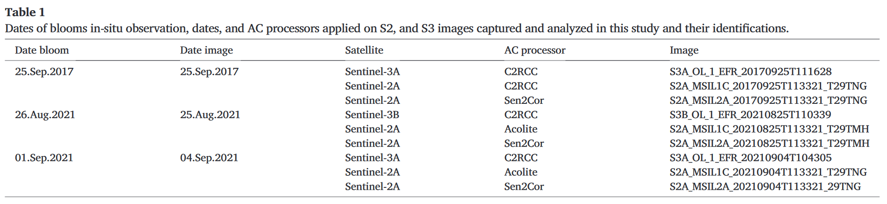

3 Image Corrections
3.1 Summary
This section covers corrections applied to remote sensing data, to account for atmospheric noise, shadow and distortion, and other processes affecting the raw output. In practice, corrections will most often be dealt with by the image provider - where data is made available ‘analysis ready’. It is important to search source metadata for details on which corrections have been applied, and the calculations used.
3.1.1 Types of Correction
| Type | Description | Examples |
|---|---|---|
| Geometric Correction (includes Orthorectification, or Topographic Correction) | Accounts for differences in sensor view angles. Corrections will use methods such as ground control points, where known points are identified in both images. See figure below. | Making the images taken straight down (“nadir”) comparable to images from off-centre (“off-nadir”) |
| Atmospheric Correction | Accounts for the ‘haze’ caused by atmospheric scattering and absorption. | Using Dark Object Subtraction (DOS) to quantify the difference between surface reflectance and top-of-atmosphere (TOA) reflectance. |
| Resampling | Accounts for difference in spatial resolution of raster images. Resampling is used to calculate values for ‘lower’ resolution pixels calculated from the component higher resolution pixels. | Used to resample Landsat bands taken at 10m resolution into lower resolution 20m pixels, to allow band math with other bands recorded at 20m resolution. [SPECIFY THE BANDS AT 20; FROM PRAC 1] |
| Radiometric Calibration | Accounts for the conversion of unitless data collected by the sensor (a ‘Digital Number’) to a value indicating the spectral radiance. | The transition from Digital Number to Radiance to Reflectance represents different values corresponding to increasing levels of correction/processing. |
| Point Spread Functions | Accounts for the spread of reflectance values that contribute to a single pixel. The centre of a pixel will have the greatest influence on the observed reflectance; point spread functions calculate the influence of pixel sections as distance increases from the centre. |
This diagram from Jensen et al. (2015) illustrates the comparison between analog concepts of image processing and correction, and digital counterparts.
3.2 Application
In a case study of mapping algal blooms to the north of Spain, Detoni et al. (2023) illustrate different approaches to atmospheric correction and how this can influence the interpretation of results. The study utilises data from the Sentinel 2A/B satellites, which are then corrected for atmospheric and sunglint distortions using 2 processors: the ACOLITE and C2RCC, with the aim being to develop a reflectance-based algorithm for the detection of the red algae N. scintillans.
| Processor | Description |
|---|---|
| ACOLITE | Developed by the Royal Belgian Institute for Natural Sciences (RBINS), and specifically developed for marine, coastal and inland waters. |
| C2RCC | Case 2 Regional Coast Colour; available through SNAP software. |

The findings of this study show that different processors produced different results and interpretations; for example, the C2RCC processor overestimated bloom detection compared with field survey data, whereas the ACOLITE processor was better able to detect the algae of interest.
3.3 Reflection
The main takeaway from this week’s topic was that correction of remote sensing data is a complex process that can involve a high degree of subjective or contextual judgment - an example of the framing of remote sensing as both a science and an art. This is highlighted in the case study of Detoni et al. (2023) discussed above.
Because many remote sensing data providers produce pre-corrected data, including Google Earth Engine, I am interested in exploring further in which cases it would be important to interrogate the correction process used, or when to think about accessing raw data to perform an own set of corrections.